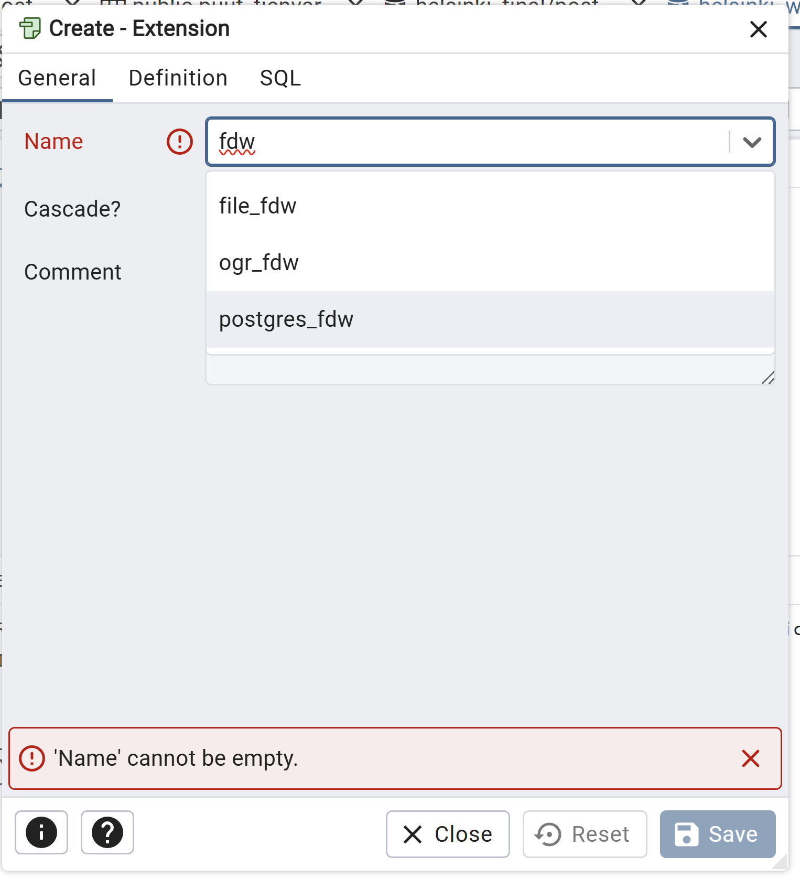

8 Harjoitus 7: Foreign Data Wrapper
Harjoituksen sisältö - Harjoituksessa tutustutaan Postgresin FDW-ominaisuuteen ja miten sillä saadaan yhdistettyä tietokanta muihin tietokantoihin tai ulkoisiin datalähteisiin.
Harjoituksen tavoite - Harjoitusten jälkeen opiskelijalla on
8.0.1 Valmistautuminen
Avaa pgAdmin selaimeen ja kirjaudu sisään. Avaa Query Tool (Valitse trainingdatabase -> Ylhäältä Tools -> Query Tool). Käytössä tulee olla myös web-selain, joka mahdollistaa pääsyn Maanmittauslaitoksen koordinaattien muunnospalveluun.
8.1 Harjoitus
Jos koitat kysellä toisen tietokannan tauluista (kuten worlddatabase) esimerkiksi kyselyllä
SELECT * FROM populated_places;PostgreSQL palauttaa virheen (“ERROR: cross-database references are not implemented”). Luodaan nyt foreign data wrapper, jotta voimme tuoda tämän “ulkoisen” tietokannan tiedot tietokantaan foreign tablen muodossa.
8.1.1 Foreign Data Wrapperin luominen
Foreign data wrapper (fdw) voidaan luoda myös pgAdminin käyttöliittymän kautta luomalla ensin vaadittava laajennos

Tämän jälkeen määritettäisiin itse fdw, mutta ajetaan tässä suoraan nämävastaavat SQL-komennot.
CREATE EXTENSION postgres_fdw;Tämän jälkeen voidaan luoda ns. foreign server:
CREATE SERVER foreign_worlddata_server
FOREIGN DATA WRAPPER postgres_fdw
OPTIONS (host 'dbhost', port '5439', dbname 'worlddatabase');Lisäksi täytyy luoda käyttäjien mäppäys lokaalin ja ulkoisen tietokannan käyttäjien välillä:
CREATE USER MAPPING FOR <local_user>
SERVER foreign_worlddata_server
OPTIONS (user 'foreign_user', password 'password');Tämän jälkeen voidaan tuoda dataa paikalliseen tietokantaan ns. ulkoisena tauluna (foreign table). Huomaa, että ulkoisen taulun kenttien tyyppien ja muiden ominaisuuksien pitää vastata datalähteen taulun vastaavia (lähtökohtaisesti myös kenttien nimien).
CREATE FOREIGN TABLE worlddata_foreign_table (
id integer NOT NULL,
geom geometry,
name character varying(100)
)
SERVER foreign__worlddata_server
OPTIONS (schema_name 'public', table_name 'populated_places');Edellä sisällytettiin tauluun vain osa ulkoisen taulun kentistä, mutta voit ottaa niitä mukaan lisääkin. Tee alussa toiseen tietokantaan yritetty kysely nyt ulkoiseen tauluun:
SELECT * FROM worlddata_foreign_table;Koita yhdistää dataa paikallisten taulujen kanssa, tekemällä esimerkiksi liitoksia taulujen välille tai luomalla näkymän.
Esimerkki:
SELECT * from worlddata_foreign_table A
JOIN kaupunginosajako B
ON ST_Intersects(ST_Transform(a.geom, 4326), b.geom)Entä minkä kaupunginosan sisällä on worlddatan populated_places-taulun piste?
Eroaako käyttö jollakin tavalla paikallisen tietokannan taulun tai näkymän käytöstä?
Koita vielä lopuksi muokata foreign tablea, esimerkiksi hae ensin
SELECT * FROM worlddata_foreign_table
WHERE name = 'Vatican City';jolloin varmistut että kyseinen rivi on olemassa, ja muokkaa sitten:
UPDATE worlddata_foreign_table
SET name = 'Vatikaani'
WHERE name = 'Vatican City';Käy nyt varmistamassa että muokkaus todella muutti myös ulkoisen tietokannan alkuperäistä tauluna (mikäli ulkoisen käyttäjän oikeudet tähän riittivät). Valitse siis worlddata -> Ylhäältä Tools -> Query Tool ja aja
SELECT * FROM populated_places
WHERE name = 'Vatikaani';Voit vielä halutessasi muokata alkuperäisen worlddata-tietokannan taulua ja tarkistaa sen vaikutusta foreign tableen.
Voit ajan salliessa lisäksi tutustua myös asennuksen mukana tulleisiin muun tyyppisiin foreign data wrappereihin hakemalla pgAdminin CREATE EXTENSION -kohdasta, kuten